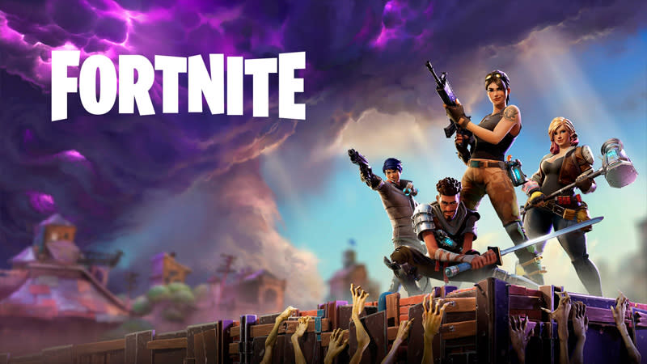

O mini site foi criado para ajudar jogadores a encontrar rapidamente títulos que combinem com seus gostos.
Com uma interface simples e objetiva, oferece recomendações personalizadas baseadas em gênero, estilo de jogo e plataforma.
• Jogadores iniciantes que buscam orientação
• Usuários indecisos sobre o que jogar
• Gamers que desejam descobrir novos títulos de forma rápida
Tornar a escolha do próximo jogo uma experiência simples, rápida e divertida — reduzindo a indecisão e
apresentando opções que realmente fazem sentido para o jogador.
1. Elden Ring
Uma aventura épica em mundo aberto, com combate desafiador e narrativa profunda. Considerado um dos maiores marcos da nova geração.
.jpg)
2. God of War: Ragnarök
Visual impressionante, história emocionante e gameplay refinado. Um dos títulos mais completos da geração.
.jpg)
3. Cyberpunk 2077 (Next-Gen)
Após as atualizações, se tornou um dos RPGs mais imersivos, com gráficos de alto nível e mundo vivo.

4. Horizon Forbidden West
Exploração em mundo aberto com visuais impressionantes e combates estratégicos contra máquinas colossais.
.jpg)
5. Starfield
A aposta da Bethesda para a nova geração: centenas de planetas, liberdade total e foco na exploração espacial.
.jpg)
1. Counter strike 2
Counter-Strike 2 (CS2) é o novo capítulo da renomada franquia de tiro em primeira pessoa (FPS) da Valve, lançado como uma atualização gratuita para o Counter-Strike: Global Offensive (CS:GO) em setembro de 2023.
O jogo é construído no motor Source 2, apresentando gráficos aprimorados, iluminação realista, efeitos visuais e sonoros renovados, além de uma jogabilidade aprimorada com arquitetura de servidor "sub-tick".
.jpg)
2. Fortnite
Fortnite é um popular jogo eletrônico multijogador online gratuito, desenvolvido pela Epic Games, conhecido principalmente pelo seu modo de jogo Battle Royale.
Pagina do jogo na Epic Games Store
3. Hades
Hades é um aclamado RPG de ação roguelike no qual o jogador desafia o deus dos mortos em uma tentativa de escapar do Submundo da mitologia grega.
Desenvolvido pela Supergiant Games, o jogo é conhecido por sua jogabilidade viciante, narrativa envolvente e estilo de arte único.
.jpg)
4. ARC Raiders
Hades é um aclamado RPG de ação roguelike no qual o jogador desafia o deus dos mortos em uma tentativa de escapar do Submundo da mitologia grega.
Desenvolvido pela Supergiant Games, o jogo é conhecido por sua jogabilidade viciante, narrativa envolvente e estilo de arte único.
.jpg)
5. The Last of Us Part II
The Last of Us Part II é um aclamado jogo eletrônico de ação-aventura e survival horror desenvolvido pela Naughty Dog, disponível para PlayStation 4 (PS4), PlayStation 5 (PS5) e PC.
O jogo segue as jornadas de Ellie e Abby em um mundo pós-apocalíptico, abordando temas complexos de vingança e as consequências emocionais da violência.
.jpg)
| Posição | Jogo | Nota | Ano de Lançamento |
|---|---|---|---|
| 1º | Hades | 95 | 2025 |
| 2º | The Last of Us | 90 | 2020 |
| 3º | Arc Raiders | 86 | 2025 |
| 4º | Couter Striker | 82 | 2023 |
| 5º | Fortnite | 78 | 2017 |
1. Free Fire
Free Fire é um popular jogo eletrônico mobile de ação e aventura do gênero battle royale, desenvolvido pela 111dots Studio e publicado pela Garena.
Em cada partida, 50 jogadores pulam de paraquedas em uma ilha em busca de armas e equipamentos para eliminar os adversários e ser o último sobrevivente.

2. Clash Royale
Clash Royale é um popular jogo eletrônico móvel de estratégia em tempo real que combina elementos de jogos de cartas colecionáveis, defesa de torres e arenas de batalha multiplayer online (MOBA).
Foi desenvolvido e publicado pela Supercell, a mesma empresa responsável por Clash of Clans, e se passa no mesmo universo temático [1].
3. Subway Surfers
Subway Surfers é um popular jogo eletrônico mobile do gênero "corrida infinita" (endless runner), lançado em 2012 e co-desenvolvido pelas empresas dinamarquesas Kiloo Games e SYBO Games.
No jogo, você controla jovens grafiteiros, liderados pelo personagem principal Jake, que são pegos pichando trens e precisam fugir de um inspetor mal-humorado e seu cão pelos trilhos do metrô.
O objetivo é correr o mais longe possível, desviando de obstáculos e coletando moedas.
4. Minecraft
Minecraft é o jogo eletrônico mais vendido da história, um fenômeno cultural do tipo sandbox (mundo aberto) que permite aos jogadores construir e explorar mundos 3D gerados proceduralmente, feitos inteiramente de blocos.
Desenvolvido pela Mojang Studios e, posteriormente, adquirido pela Microsoft, o jogo não possui um objetivo definido, dando total liberdade criativa ao jogador.

5. Among us
Among Us é um popular jogo eletrônico multiplayer social de dedução e sobrevivência, desenvolvido e publicado pelo estúdio InnerSloth.
Lançado originalmente em 2018, o jogo explodiu em popularidade em 2020, em grande parte devido a streamers e criadores de conteúdo durante a pandemia de COVID-19.
A premissa do jogo é baseada em temas de ficção científica e mistério, similar a jogos de festa como Máfia ou Lobisomem.
.jpg)
| Posição | Jogo | Nota | Ano de Lançamento |
|---|---|---|---|
| 1º | Red Dead Redemption 2 | 99 | 2018 |
| 2º | The Last of Us Part II | 90 | 2020 |
| 3º | GTA V | 89 | 2013 |
| 4º | Resident Evil 4 Remake | 89 | 2023 |
| 5º | God of war Ragnarök | 88 | 2023 |